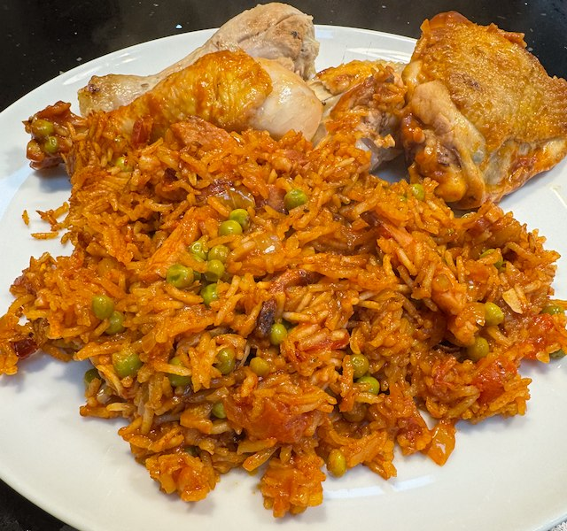

Chicken, Rice and Peas

A recipe from Grandad.
Ingredients
- 1 chicken, cut into legs, thighs, breast and wing
- ½ lemon
- 1 220g pack bacon, chopped
- 1 onion, chopped
- 4 garlic cloves, sliced
- 1 tbsp tomato puree
- 1 tbsp smoked paprika
- 1 tsp chipotle chilli flakes
- 400ml long grain rice
- 1 400g tin chopped tomatoes
- ¼ tsp sugar
- 200g frozen peas
- 400ml chicken stock, made with a stock pot
Method
Chicken. Heat frying pan to hot. Add oil, lay chicken in skin side down and salt. Turn heat down to medium and cook until skin browned. Flip chicken, squeeze over the lemon and cook some more. The chicken does not need to be fully cooked, but wants to be about ¾ of the way there. Remove the chicken, deglaze the pan, and add the stock.
Heat a le creuset pot to medium. Fry the bacon until the fat renders. Turn heat to low, add onion and fry till translucent. Add tomato puree, garlic, paprika and chilli flakes and fry for 2 min. Add rice and stir round well to coat the rice. Add tomatoes, sugar ,peas, stock and bring to boil.
Carefully lay the chicken on the top, cover, and cook in oven on 160°C for 25 min. Remove from oven and rest for 10 min with the lid on.